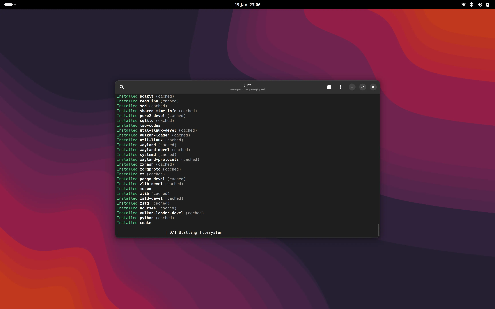

January Updates
Precisely one month since our end of year summary, so, what have we been up to? With a new year, a new start was long overdue. We're pleased to announce that we've finally shifted our butts over to our own server (again).
While this isn't quite as chunky a news update as the last post, we rather hope you appreciate the regularity of the news.

Infrastructure, revisited
'tarkah' has been tirelessly porting moss-service, the core foundation of our automated build system,
to a shiny new Rust codebase. While we don't have an immediately pressing need for the port to
come online, it will certainly address some "v1 issues" and ensure the best-in-class development
experience for our contributors.
Licensing
In our pursuit for a sustainable, community oriented project, we've been doing a lot of in house organisation.
Very importantly, we've now relicensed our packaging recipes to MPL-2.0, bringing them in line with the license chosen for our current engineering efforts (moss, etc).
To reiterate a critical point, we require that our contributions are attributed to the virtual collective "Serpent OS Developers" to ensure we're unable to relicense any contributions without express consent of the contributors involved.
Additionally we picked MPL-2.0 over Zlib due to some distinct advantages in relation to patent trolls. In combination we believe both the project and our users will have the greatest protection from patent trolls and fiscally-motivated relicensing.
As I Raise My Trigger Finger
As you may recall from the last post, we announced our intention to add system triggers to moss. We also stated that our triggers must run in isolation thanks to the unique architecture of our package management. After much consideration, we've landed on a strategy that will work for us.
Post-blit triggers
Every mutable operation in moss results in a fresh internal transaction, which is present as a full
/usr tree inside a staging tree. The majority of triggers can be executed here, just before we "activate"
the new rootfs. This allows us to detect potential trigger failures, and abort the activation.
These YAML-defined triggers will be run in an isolated environment (clone-based container) with the new /usr
and read-only access to /etc.
Post-activation triggers
Once we have a freshly activated /usr (ie new system view) we can run a very limited set of post-activation
triggers. An obvious example may be systemctl daemon-reexec. Note that by splitting post-blit and post-activation
triggers, we leave the door open to multiple activation strategies for non-simple updates, including soft reboots
and kernel patching.
Packaging updates!
With all of the migration work, our builds have also resumed. In the space of a few short days we've had 32 package builds. Ok, not a huge number, but we also have 15 outstanding pull requests to our new recipes repo!
In order to make life not only simpler for us, but for Solus in its future role as a source-derivative of Serpent, we've unified all of our git recipe repos into a new single repo, recipes.
Improved hosting
Our devops team has been working hard to mitigate bus factor with our transition to the new infrastructure, Bitwarden account, shared DNS, and opentofu configuration.
Self Hosting. Again
As part of the recovery process for Solus, the two projects shared resources, including a large Hetzner node. This has actually worked remarkably well for a long time now, however with Serpent growing we do not wish to impact the availability and stability of the Solus update experience.
Long story short, money from GitHub Sponsors (You guys! <3) is now paying for an AX52 server from Hetzner. It's sufficiently powerful that we're running a backup builder there as well as repo management and build controller.
El Cheapo Web Hosting
Looking at our project's use of static generators - we decided to review our hosting for web content.
Long story short, we deemed it entirely unnecessary. We're now using GitHub pages to deploy this
website and our documentation site via GitHub actions. Don't worry,
we use git, we have backups, and we manage the infrastructure using IaC practices.
Clarifying our baseline target
Lately there have been some questions in both Serpent and Solus as to what our baseline will be.
In Serpent OS, this will be at minimum x86_64-v2, with x86_64-v3x packages automatically
offered if the system base criteria are met.
This decision has been made to offer the widest baseline compatibility without compromising heavily
on system performance (Such that x86_64-generic is unsupported in Serpent OS). We will continue
offering both v2 and v3x until it is no longer feasible from a storage/financial perspective.
Source derivatives (Including Solus) are free to chart their own course here, if necessary,
and still benefit from tight upstream integration.
Towards Next Month
In our next update, we'll have quite a bit to cover, including:
- Integrated triggers
- Progress with GNOME packaging/readiness
- Boulder / Infrastructure porting progress
- Actually useful Serpent images